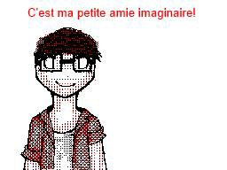
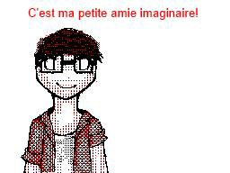
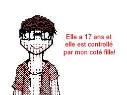
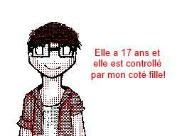
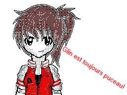
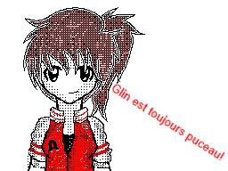
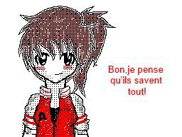
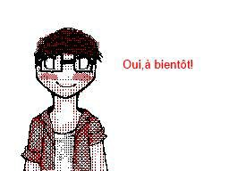
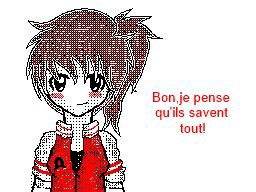
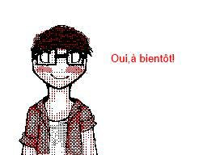

![[ANA JDG] Asterix and the Great Rescue - Megadrive](../vi/6oUXi0ckLmA/default.jpg)
![[ Présentation pour la chaîne Grenier des Joueurs ] JDG Prod](../art/SHAR.6419.583.2.jpg)


Pour pouvoir éviter de regarder une PUB avant votre musique préférer (que vous recharger tout le temps à défaut d'avoir une version "10h")!

Alors voici la solution la plus barbare (synonyme d'efficace) installable en tant que extension:
AddBlockhttps://chrome.google.com/webstore/detail/adblock/gighmmpiobklfepjocnamgkkbiglidom?hl=en
Ou en tant que programme (mais toujours en extension):
AddBlockPlus: http://www.commentcamarche.net/download/telecharger-254-adblock-plus
Il bloquera l'ensemble des PUBs sur le net (à part ceux faîtes pas vos amis mais bon,heureusement que les AK-47 existent ^^ hein!)!
![[Creepy-Pasta]La théorie du coma de Sacha!](../5252/79895252/pics/3223761183_1_3_iVsj0CmP.png)
![[Creepy-Pasta]La théorie du coma de Sacha!](../5252/79895252/pics/3223761183_1_7_LN0qnavo.jpg)
![[Superbes Images]Création de juin](../5252/79895252/pics/3223518083_1_3_pdE1HzTG.jpg)
![[Superbes Images]Création de juin](../5252/79895252/pics/3223518083_1_7_6JsJ0aHb.jpg)
![[Superbes Images]Création de juin](../5252/79895252/pics/3223518083_1_9_GkzUxXcz.jpg)
![[Superbes Images]Création de juin](../5252/79895252/pics/3223518083_1_15_1mLbL3Ol.png)
![[Superbes Images]Création de juin](../5252/79895252/pics/3223518083_1_17_bJVSKA0G.png)
![[Superbes Images]Création de juin](../5252/79895252/pics/3223518083_1_19_tkLC2mGA.jpg)
![[Superbes Images]Création de juin](../5252/79895252/pics/3223517837_1_2_BcNHiUKv.png)
![[Superbes Images]Création de juin](../5252/79895252/pics/3223517837_1_6_AEBMF0e8.png)
![[Superbes Images]Création de juin](../5252/79895252/pics/3223517837_1_8_8nsZ3UFt.jpg)
![[Superbes Images]Création de juin](../5252/79895252/pics/3223517837_1_14_JfYRtXoc.jpg)
![[Superbes Images]Création de juin](../5252/79895252/pics/3223517545_1_2_EruPPgvk.png)
![[Superbes Images]Création de juin](../5252/79895252/pics/3223517545_1_10_GP08pSU0.jpg)
![[Superbes Images]Création de juin](../5252/79895252/pics/3223517545_1_12_eFconIzj.jpg)
![[Superbes Images]Création de juin](../5252/79895252/pics/3223517545_1_16_Murudnz7.jpg)

![[Création d'image]FanYoshiBleu et moi-Troll Nation](../5252/79895252/pics/3218933285_1_2_4ku0HbFg.jpg)


![Glin à Aglina [BD Simple] (partie 1)](../5252/79895252/pics/3214996877_1_2_w1vPagw4.jpg)
![Glin à Aglina [BD Simple] (partie 1)](../5252/79895252/pics/3214996877_1_4_KMEIiQdq.jpg)
![Glin à Aglina [BD Simple] (partie 1)](../5252/79895252/pics/3214996877_1_6_jDoXfGdr.jpg)
![Glin à Aglina [BD Simple] (partie 1)](../5252/79895252/pics/3214996877_1_8_h5pRkgwe.jpg)
![Glin à Aglina [BD Simple] (partie 1)](../5252/79895252/pics/3214996877_1_10_urhkuwCj.jpg)
![Glin à Aglina [BD Simple] (partie 1)](../5252/79895252/pics/3214996877_1_12_3pbjX9Cz.jpg) 
![Glin à Aglina [BD Simple] (partie 1)](../5252/79895252/pics/3214996877_1_16_eDc3hT7R.jpg)
![Glin à Aglina [BD Simple] (partie 2)](../5252/79895252/pics/3214997027_1_2_5qHEzeMK.jpg)
![Glin à Aglina [BD Simple] (partie 2)](../5252/79895252/pics/3214997027_1_4_onZ6AS9c.jpg)
![Glin à Aglina [BD Simple] (partie 2)](../5252/79895252/pics/3214997027_1_6_7mLNkjoC.jpg)
![Glin à Aglina [BD Simple] (partie 2)](../5252/79895252/pics/3214997027_1_8_1vUH6r4p.jpg) 
![Glin à Aglina [BD Simple] (partie 2)](../5252/79895252/pics/3214997027_1_14_lW6CkhOB.jpg) 

![Glin à Aglina [BD Simple] (partie 3)](../5252/79895252/pics/3214997275_1_2_0d5egmUr.jpg)
![Glin à Aglina [BD Simple] (partie 3)](../5252/79895252/pics/3214997275_1_8_JAXIVSu1.jpg) 
![Glin à Aglina [BD Simple] (partie 3)](../5252/79895252/pics/3214997275_1_14_frJxMJ12.jpg)
![Glin à Aglina [BD Simple] (partie 3)](../5252/79895252/pics/3214997275_1_16_KJzlMDVe.jpg)

![[Projet de site]Facefriends](../5252/79895252/pics/3214540107_1_4_zbfwOqM5.jpg)
![[Projet de site]Facefriends](../5252/79895252/pics/3214540107_1_6_ZZDalJAO.jpg)
![[Projet de site]Facefriends](../5252/79895252/pics/3214540107_1_10_vb3DEvun.png)
![[Projet de site]Facefriends](../5252/79895252/pics/3214540107_1_12_zzX6QEG6.png)

![[Dessin Virtuel]Glin Sur Pied](../5252/79895252/pics/3212248021_1_2_fKpKG7PI.png)
Partage